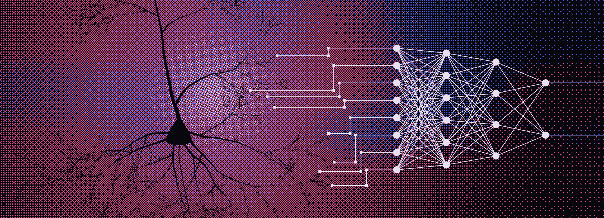
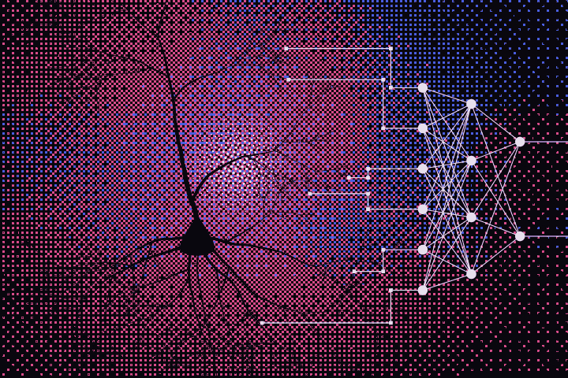
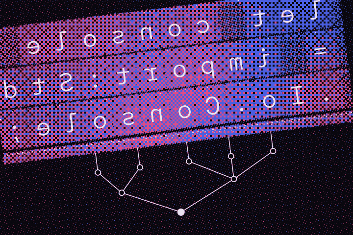

examples/hello-world/hello-world.nra Neura
let console = import:Std.Io.Console;
let program = import:Std.Program;
let HelloWorld = module:program.Entry ( // HelloWorld inherits Std.Program.Entry (main)
export let.override main = func(args: string[]) -> program.ExitCode {
console.print_line("Hello, World!");
return program.ExitCode.Ok; // Enum ExitCode
};
);